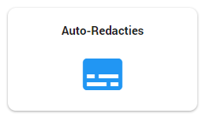
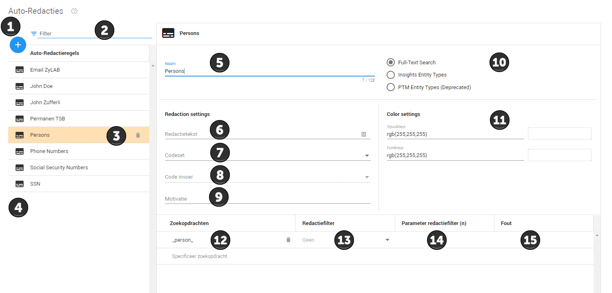

Het is mogelijk om automatisch informatie af te laten lakken in ZyLAB. Dit werkt het beste voor gegevens met een standaard opbouw. Denk hierbij aan telefoonnumers, email adressen, bankrekeningnummers etc. De functionaliteit kan ook gebruikt worden voor bijvoorbeeld persoonsnamen.
U gaat hiervoor naar het Configuratie dashboard, vervolgens klikt u hier op de tegel Auto-Redacties.

In het volgende menu kunt u regels aanmaken voor het automatisch aflakken, toelichting hierover vindt u hieronder in Uitleg 1.

Hier kunt u een nieuwe regel aanmaken voor het automatisch aflakken.
Hier kunt u zoeken binnen de regels voor het automatisch aflakken.
Als u een regel hebt geselecteerd kunt u deze verwijderen door te klikken op het prullenbak icoontje.
Hier ziet u de huidige regels voor het automatisch aflakken.
Als u een nieuwe regel aanmaakt, of een huidige regel aanpast, zal de rechterzijde verschijnen.
Hier geeft u een naam aan de automatische aflakregel.
Hier kunt u de tekst invullen die u getoond wilt hebben op de aflakking. Dit kunt u gebruiken als de volgende twee punten geen uitkomst bieden.
Hier vult u de wetgeving in op basis waarvan er wordt afgelakt, bijvoorbeeld Wet open overheid.
Hier vult u het wetsartikel met lid in op basis waarop er wordt afgelakt, in het geval van persoonsgegevens zal dit artikel 10 lid 2 sub E zijn.
Hier vult u, indien gewenst, uw motivatie in voor de aflakkingen.
Indien u automatisch wilt aflakken op basis van uw resultaten uit Insights kunt u dit hier aangeven. Indien aangeklikt kun u vervolgens op de locatie van punt 11 uit een dropdown menu het betreffende entiteitentabel selecteren. Meer hierover vindt u in het topic Insights (Engels).
Hier kunt u de kleur en doorzichtigheid aanpassen van de aflakking. Dit is in beginsel niet leidend voor hoe de documenten er bij de oplevering uit komen te zien, echter kan hier wel voor gekozen worden. Meer informatie hierover vindt u in het topic Documenten produceren met permanente aflakkingen en inventarislijst.
Hier geeft u de regel op basis waarvan wordt afgelakt. Dit gaat door middel van een query, zoals besproken in het topic Zoekmogelijkheden. In voorbeeld 1 hieronder zijn enkele voorbeelden gegeven van queries voor het automatisch aflakken die handig zijn voor de Woo.
Hier kunt u een enkele opties selecteren om uw aflakking aan te passen. Bijvoorbeeld dat enkel de eerste 3 karakters worden afgelakt, of in het geval van email adressen dat alles tot het @ karakter enkel wordt afgelakt zodat de extensie zichtbaar blijft.
In het geval u een optie bij punt 13 heeft gekozen waarvoor u een getal dient te specificeren, kunt u dit hier doen, bijvoorbeeld wanneer u enkel een X aantal karakter wilt laten aflakken.
Indien u een fout heeft gemaakt in uw query wordt de foutmelding hier getoond.
Klik op Apply om de automatisch aflakregel toe te voegen.
De volgende query’s zijn handig om automatisch te laten aflakken bij het behandelen van een Woo-verzoek.
| Query | Effect |
| *@?+.* | Lakt alle emailadressen af. |
| ((((0[1-9]{1}[0-9]{1}) or (0 p/1 [1-9]{1}[0-9]{1}) or (31 p/1 0[1-9]{1}[0-9]{1}) or (31 p/1 [1-9]{1}[0-9]{1}) or (31 p/1 0 p/1 [1-9]{1}[0-9]{1}) or (0031 p/1 0[1-9]{1}[0-9]{1}) or (0031 p/1 [1-9]{1}[0-9]{1}) or (0031 p/1 0 p/1 [1-9]{1}[0-9]{1})) p/1 (([0-9]{7}) or ([0-9]{4} p/1 [0-9]{3}) or ([0- 9]{3} p/1 [0-9]{4}) or ([0-9]{3} p/1 [0-9]{3} p/1 [0-9]{1}) or ([0-9]{1} p/1 [0-9]{3} p/1 [0-9]{3}) or ([0-9]{3} p/1 [0-9]{1} p/1 [0-9]{3}) or ([0-9]{3} p/1 [0-9]{2} p/1 [0-9]{2}) or ([0-9]{2} p/1 [0-9]{3} p/1 [0-9]{2}) or ([0- 9]{2} p/1 [0-9]{2} p/1 [0-9]{3}) or ([0-9]{2} p/1 [0-9]{2} p/1 [0-9]{2} p/1 [0-9]{1}) or ([0-9]{1} p/1 [0-9]{2} p/1 [0-9]{2} p/1 [0-9]{2}))) or ((0[1- 9]{1}[0-9]{1}[0-9]{7}) or (0[1-9]{1}[0-9]{1}[0-9]{4} p/1 [0-9]{3}) or (0[1- 9]{1}[0-9]{1}[0-9]{3} p/1 [0-9]{4}) or (0[1-9]{1}[0-9]{1}[0-9]{3} p/1 [0- 9]{3} p/1 [0-9]{1}) or (0[1-9]{1}[0-9]{1}[0-9]{3} p/1 [0-9]{1} p/1 [0-9]{3}) or (0[1-9]{1}[0-9]{1}[0-9]{1} p/1 [0-9]{3} p/1 [0-9]{3}) or (0[1-9]{1}[0- 9]{1}[0-9]{2} p/1 [0-9]{2} p/1 [0-9]{2} p/1 [0-9]{1}) or ([\+]{0,1}31[1- 9]{1}[0-9]{1}[0-9]{7}) or ([\+]{0,1}31[1-9]{1}[0-9]{1}[0-9]{7}) or ([\+]{0,1}31[1-9]{1}[0-9]{1}[0-9]{4} p/1 [0-9]{3}) or ([\+]{0,1}31[1-9]{1}[0- 9]{1}[0-9]{3} p/1 [0-9]{4}) or (0031[1-9]{1}[0-9]{1}[0-9]{7}) or (0031[1- 9]{1}[0-9]{1}[0-9]{4} p/1 [0-9]{3}) or (0031[1-9]{1}[0-9]{1}[0-9]{3} p/1 [0- 9]{4})) or (((0[1-9]{1}[0-9]{2}) or (0 p/1 [1-9]{1}[0-9]{2}) or (31 p/1 0[1- 9]{1}[0-9]{2}) or (31 p/1 [1-9]{1}[0-9]{2}) or (0031 p/1 0[1-9]{1}[0-9]{2}) or (0031 p/1 [1-9]{1}[0-9]{2}) or (0031 p/1 0 p/1 [1-9]{1}[0-9]{2})) p/1 (([0-9]{6}) or ([0-9]{3} p/1 [0-9]{3}) or ([0-9]{2} p/1 [0-9]{2} p/1 [0-9]{2}) or ([0-9]{4} p/1 [0-9]{2}) or ([0-9]{2} p/1 [0-9]{4}))) or ((0[1-9]{1}[0- 9]{2}[0-9]{6}) or (0[1-9]{1}[0-9]{2}[0-9]{3} p/1 [0-9]{3}) or (0[1-9]{1}[0- 9]{2}[0-9]{2} p/1 [0-9]{4}) or (0[0-9]{1}[0-9]{2}[0-9]{4} p/1 [0-9]{2}) or (0[1-9]{1}[0-9]{2}[0-9]{2} p/1 [0-9]{2} p/1 [0-9]{2})([\+]{0,1}31[1-9]{1}[0- 9]{2}[0-9]{6}) or ([\+]{0,1}31[1-9]{1}[0-9]{2}[0-9]{3} p/1 [0-9]{3}) or ([\+]{0,1}31[1-9]{1}[0-9]{2}[0-9]{2} p/1 [0-9]{4}) or ([\+]{0,1}1[1-9]{1}[0- 9]{2}[0-9]{4} p/1 [0-9]{2}) or ([\+]{0,1}31[1-9]{1}[0-9]{2}[0-9]{2} p/1 [0- 9]{2} p/1 [0-9]{2}) or (0031[1-9]{1}[0-9]{2}[0-9]{6}) or (0031[1-9]{1}[0-9]{2}[0-9]{3} p/1 [0-9]{3}) or (0031[1-9]{1}[0-9]{2}[0-9]{2} p/1 [0-9]{4}) or (0031[1-9]{1}[0-9]{2}[0-9]{4} p/1 [0-9]{2}))) | Lakt alle telefoonnummers met een netnummer af die zijn geschreven op een conventionele wijzes. |
| ((((6) or (06) or (0 p/1 6) or ([\+]{0,1}316) or ([\+]{0,1}31 p/1 6) or (00316) or (0031 p/1 6) or (0031) or ([\+]{0,1}31)) p/1 (([0-9]{8}) or ([0-9]{4} p/1 [0-9]{4}) or ([0-9]{3} p/1 [0-9]{5}) or ([0-9]{5} p/1 [0-9]{3}) or (6[0-9]{8}) or (6[0-9]{4} p/1 [0-9]{4}) or (6[0-9]{2} p/1 [0-9]{3} p/1 [0-9]{3}) or ([0-9]{3} p/1 [0-9]{3} p/1 [0-9]{2}) or ([0-9]{3} p/1 [0-9]{2} p/1 [0-9]{3}) or ([0-9]{2} p/1 [0-9]{3} p/1 [0-9]{3}) or ([0-9]{2} p/1 [0-9]{2} p/1 [0-9]{2} p/1 [0-9]{2}))) or ((06[0-9]{8}) or (06[0-9]{4} p/1 [0-9]{4}) or (06[0-9]{3} p/1 [0-9]{3} p/1 [0-9]{2}) or (06[0-9]{3} p/1 [0-9]{2} p/1 [0-9]{3}) or (06[0-9]{2} p/1 [0-9]{3} p/1 [0-9]{3}) or (06[0-9]{3} p/1 [0-9]{5}) or (06[0-9]{5} p/1 [0-9]{3}) or (06[0-9]{2} p/1 [0-9]{2} p/1 [0-9]{2} p/1 [0-9]{2}) or ([\+]{0,1}316[0-9]{8}) or ([\+]{0,1}316[0-9]{4} p/1 [0-9]{4}) or ([\+]{0,1}316[0-9]{3} p/1 [0-9]{3} p/1 [0-9]{2}) or ([\+]{0,1}316[0-9]{3} p/1 [0-9]{2} p/1 [0-9]{3}) or ([\+]{0,1}316[0-9]{2} p/1 [0-9]{3} p/1 [0-9]{3}) or ([\+]{0,1}316[0-9]{3} p/1 [0-9]{5}) or ([\+]{0,1}316[0-9]{5} p/1 [0-9]{3}) or ([\+]{0,1}316[0-9]{2} p/1 [0-9]{2} p/1 [0-9]{2} p/1 [0-9]{2}) or (00316[0-9]{8}) or (00316[0-9]{4} p/1 [0-9]{4}) or (00316[0-9]{3} p/1 [0-9]{5}) or (00316[0-9]{5} p/1 [0-9]{3}) or (00316[0-9]{3} p/1 [0-9]{3} p/1 [0-9]{2}) or (00316[0-9]{3} p/1 [0-9]{2} p/1 [0-9]{3}) or (00316[0-9]{2} p/1 [0-9]{3} p/1 [0-9]{3}) or (00316[0-9]{2} p/1 [0-9]{2} p/1 [0-9]{2} p/1 [0-9]{2}))) | Lakt alle 06-telefoonnummers af die zijn geschreven op een conventionele manier. |
|
1 of {Piet, Verstappe, Piet Verstappe, "P" Verstappe, Henk, Smit, Henk Smit, H Smit}
|
Lakt de namen Piet Verstappe en Henk Smit af die op verschillende manieren in de documenten staan. |
| (1 of {sofi, sofi nummer~1, sofinummer~1, sofi nr, sofinr, burgerservicenummer~2, burger~1 service~1 nummer~1, burgerservice~2 nummer~1, burger~1 servicenummer~2, burgerservice~2 nr, burg nummer~1, burg nr, bsn, bsn nummer~1, bsn nr, bsnummer, bsnnummer}) p/3 (1 of {[0-9]{9}, [1-9][0-9]{7}, [0-9]{2,5}.[0-9.]{2,5}.[0-9.]{2,5}}) | Lakt alle burgerservicenummers af. |
| ([A-Z][A-Z][0-9][0-9][A-Z]{4}[0-9\.]{10,14}) or (([A-Z][A-Z][0-9][0-9] [A-Z]{4} [0-9\.]{10,14})) |
Lakt alle IBAN nummers af. |